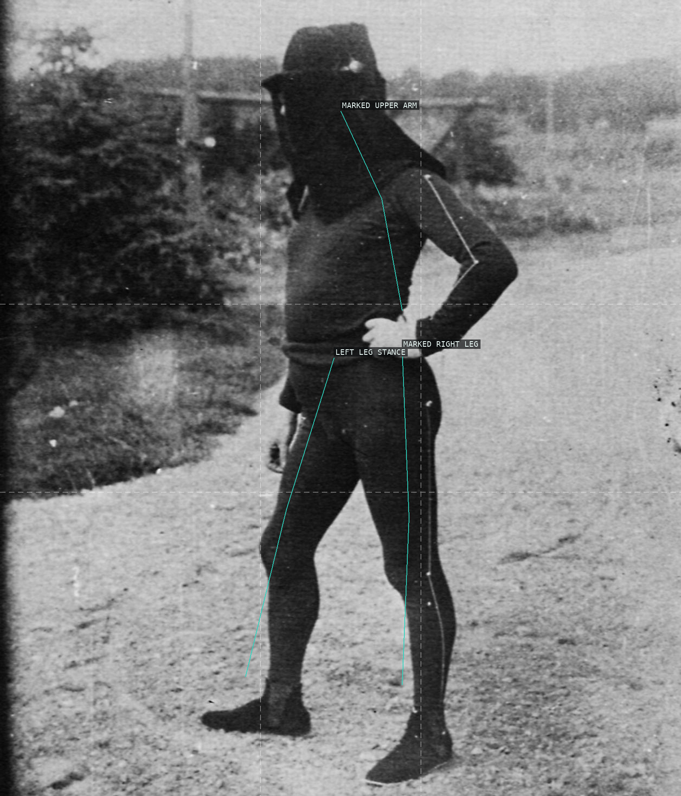
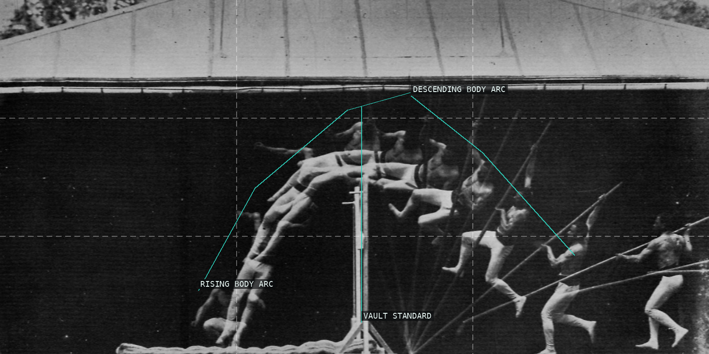
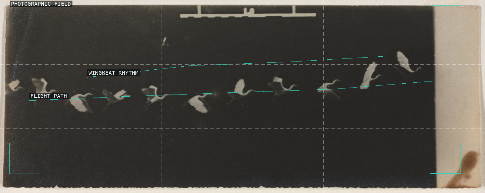
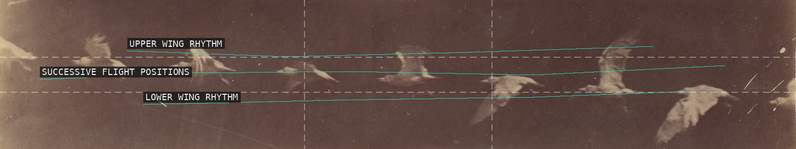
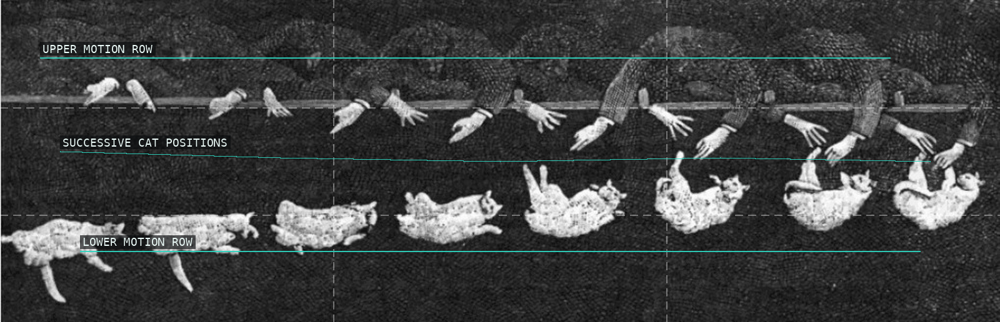
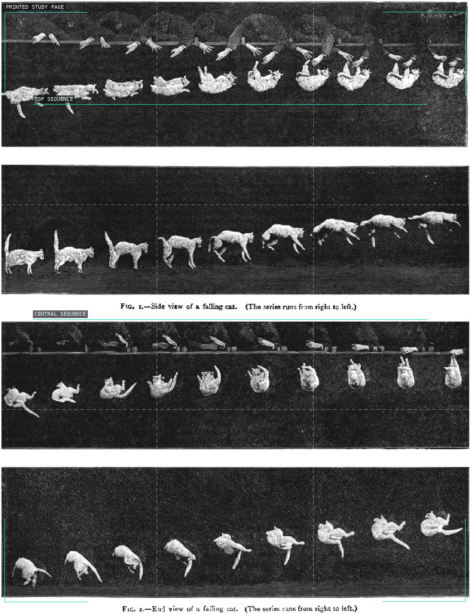

/* etienne-jules-marey - proofs */
6 plates. Deterministic overlays rendered by the composition-analysis skill.

01-man-black-suit
The marked suit turns a standing body into a sparse diagram of joints and weight.

02-pole-vault
Repeated positions turn the pole vault into one continuous arc around a fixed standard.

03-flying-heron
Repeated pale birds cross the dark field as a measured rhythm of wingbeats.

04-bird-in-flight
The compact strip makes flight visible as a chain of repeated bright contours.

05-falling-cat-sequence
Repeated cat positions read as a time sequence across a black photographic field.

06-falling-cat-study
The printed page assembles several rows of falling-cat phases into an explicit study of rotation.